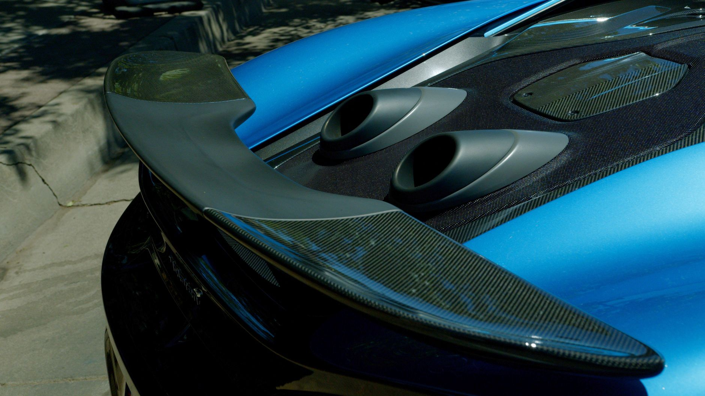

피지컬AI 원년, 한국 제조는 소재에서 막힌다

한국피지컬AI협회가 2025년 8월 출범하며 AI·반도체·로봇 통합 전략을 공식화했다. 협회 참여 기업은 현대로보틱스·레인보우로보틱스·두산로보틱스 등 10개사 이상이며, 정부는 2026년까지 피지컬AI 관련 R&D 예산을 전년 대비 35% 늘린 약 4,200억 원 규모로 편성했다.
피지컬AI 로봇의 관절부 액추에이터에 쓰이는 네오디뮴(Nd)·디스프로슘(Dy) 영구자석은 중국산이 글로벌 공급의 약 87%를 점유한다. 중국이 2023년부터 희토류 자석 관련 기술 수출을 제한한 데 이어 2025년에는 중희토류(Dy·Tb) 쿼터를 전년 대비 15% 축소 운용 중인 것으로 파악된다.
산업용 로봇 관절·드라이브 핵심 소재인 탄소섬유는 도레이(일본)·효성첨단소재(한국) 양강 구도지만, 고강도 등급(T800급 이상) 탄소섬유의 한국 자체 생산 비율은 약 22%에 불과하다. 피지컬AI 로봇의 경량화·고출력 요건을 맞추려면 T1000급 탄소섬유가 필요하고, 이 등급은 국내 양산 실적이 없다.
전력 반도체(SiC) 기판 소재인 고순도 탄화규소(SiC)는 Wolfspeed(미국)·로옴(일본)이 시장을 주도하며 한국은 SK실트론이 유일하게 6인치 SiC 웨이퍼를 양산 중이다. SK실트론의 SiC 웨이퍼 생산 능력은 연간 약 36만 장(2024년 기준)으로 국내 전력 반도체 수요의 40% 수준에 미치지 못한다.
피지컬AI 전략이 '선언'에서 '실제 제조'로 전환되는 순간, 병목은 소프트웨어가 아니라 소재다. 네오디뮴 자석 없이는 액추에이터가 안 되고, T1000급 탄소섬유 없이는 경량 관절이 안 된다. 한국이 피지컬AI 제조강국을 목표로 한다면 소재 자립도를 전략 KPI에 넣어야 한다.
정부 소부장 지원 1,700억 원 중 피지컬AI 소재에 배정된 예산은 구체적으로 공개되지 않았다. 일반 소부장 지원 틀 안에 피지컬AI 소재를 넣으면 희토류 자석·탄소섬유·SiC 기판 각각의 전략성이 희석된다. 별도 피지컬AI 소재 특화 트랙이 없으면 예산이 분산 소진될 가능성이 높다.
현대로보틱스·두산로보틱스 등 완성 로봇 업체는 핵심 소재를 일본·중국에서 조달하는 구조를 단기에 바꾸기 어렵다. 국내 소재 공급망이 갖춰지기 전까지 원가 경쟁력과 공급 안정성 모두 외부 변수에 노출된다.
효성첨단소재: 탄소섬유 국산화율 확대 수혜 기업으로 피지컬AI 로봇 수요가 증가하면 T800급 이상 고등급 라인 증설 명분이 생긴다. 현재 전주공장 연산 2,400t 규모를 2027년까지 4,000t으로 확장하는 계획이 있으며, 정부 소부장 지원 대상에 포함될 경우 투자 속도가 빨라진다.
SK실트론: 국내 유일 SiC 웨이퍼 양산 기업으로 피지컬AI 전력 반도체 수요 증가 시 직접 수혜를 받는다. 2025년 미국 미시간 공장(SiC 생산 라인)이 가동 단계에 진입하면서 미국 IRA 적격 부품 공급자 지위도 동시에 확보할 수 있다.
네오디뮴 자석 대안이 없는 한국 로봇 업계: 중국이 중희토류 쿼터를 추가 축소하거나 자석 완제품 수출을 통제할 경우 국내 로봇 액추에이터 조달 단가가 30~50% 급등할 수 있다. 현재 국내 영구자석 대체 공급망은 사실상 전무하다.
T1000급 탄소섬유 미보유 상태의 경량 로봇 개발사: 일본 도레이에 고등급 탄소섬유 전량 의존 구조에서 납기 지연 또는 수출 규제 시 제품 개발 일정이 최소 6~12개월 지연될 위험이 있다.
피지컬AI 로봇 부품 구매 담당자는 네오디뮴·디스프로슘 자석 재고 기준을 현재 3개월치에서 최소 6개월치로 상향해야 한다. 중국 쿼터 변화 시 즉각 대응 여유가 없으면 라인 중단 리스크가 현실화된다.
탄소섬유 조달은 도레이 단일 소스 구조를 벗어나 효성첨단소재와 공동 개발(T800급 기준 충족 여부 확인) 또는 미국 Hexcel·Solvay 대체 벤더 검토가 필요하다. 단기 비용이 올라도 소스 분산이 중장기 리스크 프리미엄을 낮춘다.
SiC 기판은 SK실트론 국내 물량과 미국산 Wolfspeed 물량을 병행 조달하는 이중 소싱 체계를 갖추면 IRA 요건과 공급 안정성을 동시에 충족할 수 있다. 미국산 SiC 웨이퍼 비중을 30% 이상으로 높이면 2026년 이후 IRA 보조금 적격 부품 요건에서 유리한 위치를 선점한다.
실제 조달 현장에서는 — 일본산 고등급 탄소섬유 납기가 2024년 하반기부터 평균 16주에서 22주로 늘어난 사례가 나타나고 있다. 피지컬AI 양산 타임라인을 역산해 소재 발주 시점을 최소 6개월 앞당기지 않으면 완성품 출하 지연이 불가피하다.
이 포스팅은 쿠팡 파트너스 활동의 일환으로 수수료를 제공받습니다.